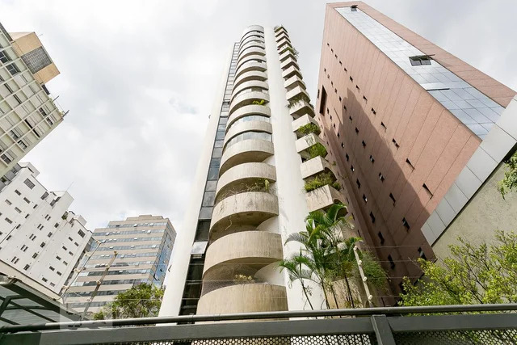
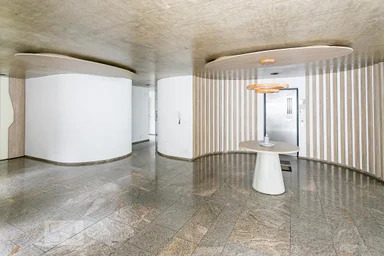
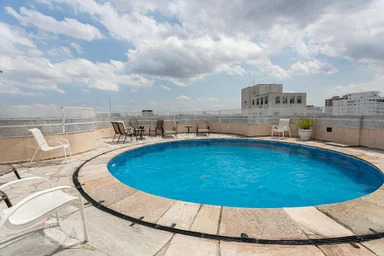
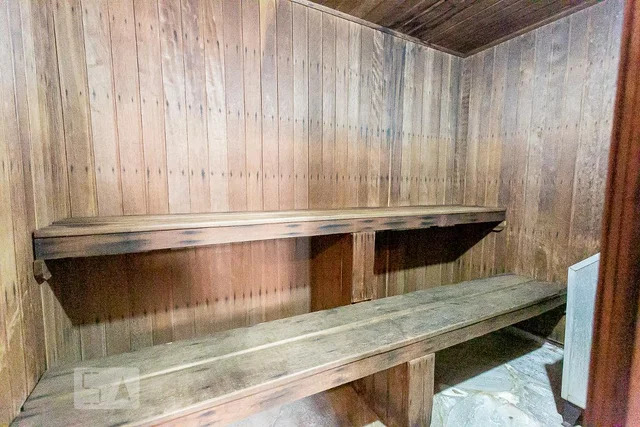
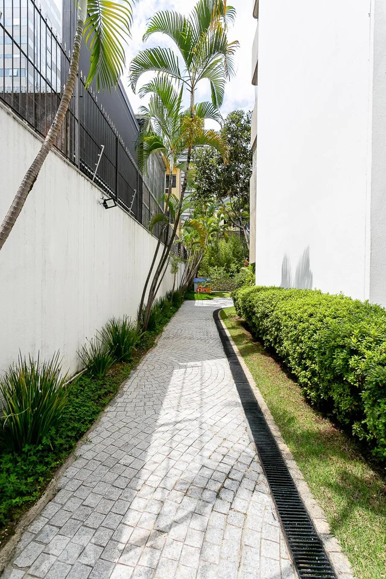
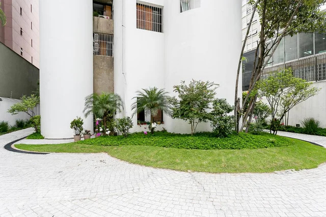
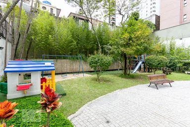

Alameda Itu, 1292 · Jardins · São Paulo
Uma residência singular desde os anos 1980
O Maison Blanche é um edifício residencial de alto padrão localizado em uma das avenidas mais nobres de São Paulo. Com 16 andares — cada um com um único apartamento de 218 a 318 m² — oferece a privacidade e exclusividade que poucos endereços podem proporcionar.
Construído na década de 1980, sua arquitetura marcante une varandas curvas, piso em mármore e acabamentos atemporais. Bem conservado e modernizado em infraestrutura, é uma referência de elegância discreta no bairro dos Jardins.
Espaços pensados para o bem-estar dos moradores






Porteiro presencial com intertravamento, reconhecimento facial e segundo portão eletrônico gerenciado no local.
Entrada controlada por tag e elevadores com leitura biométrica individualizada por andar.
Central de encomendas disponível a qualquer horário, sem necessidade de presença do morador.
Piscina com vista panorâmica para a cidade no último andar, integrada à sauna e área de lazer.
Espaço para celebrações com infraestrutura completa disponível para os moradores.
Área verde paisagística no térreo com playground, caminhos arborizados e espaço de convivência ao ar livre.
Alameda Itu, 1292
Jardins — São Paulo, SP
CEP 01421-004
A poucos passos da Avenida Paulista, da Rua Oscar Freire e dos melhores restaurantes, clínicas e serviços dos Jardins. Próximo à Estação Consolação do Metrô.
Ver no Google Maps →Para informações, entre em contato diretamente com a portaria:
(11) 2738-8334Portaria presencial 24 horas